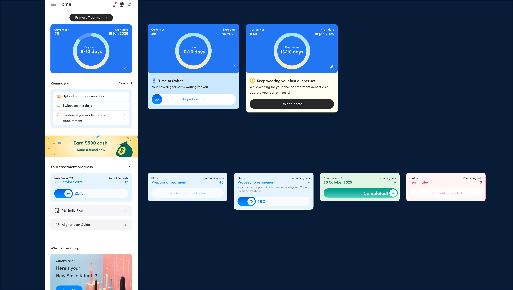
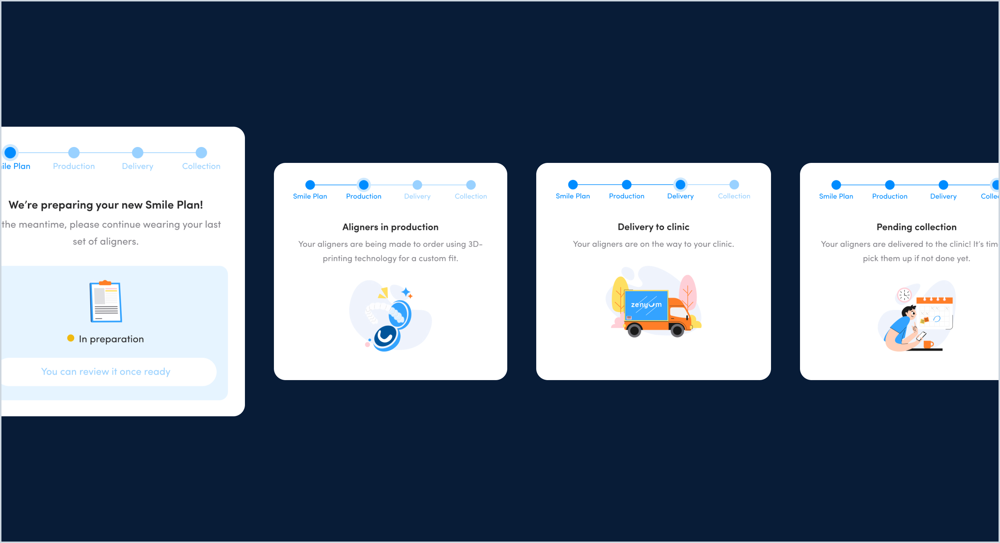
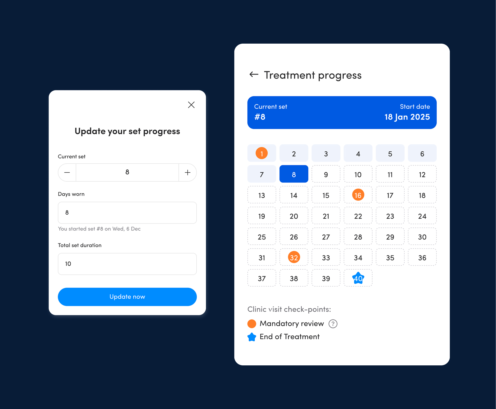

Treatment monitoring dashboard (Home)



Redesign Zenyum’s mobile app to improve patient engagement and treatment visibility throughout their aligners journey.
We launched a POC web app to explore the solution without huge tech investment, and also allowing the team to ship updates quickly. Users with a feature flag were redirected from the native app into the web.
To accommodate different patient habits, we designed multiple ways to complete the same core tasks. This resulted in unnecessarily complex flows that increased user cognitive load.
Patients rely heavily on photos to track their transformation and wanted more elaborate features.
Frequent alerts became noise, reducing patient trust and engagement.